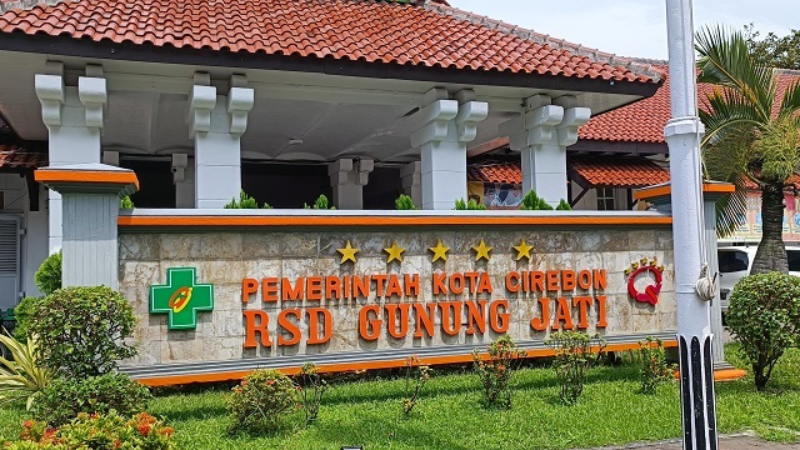

PENGUMUMAN SELEKSI MITRA KERJA SAMA OPERASIONAL (KSO) LAYANAN MANAGED SERVICE INFRASTRUKTUR SISTEM INFORMASI MANAJEMEN RUMAH SAKIT (SIMRS) RSD GUNUNG JATI KOTA CIREBON
29 April 2026
PENGUMUMAN SELEKSI MITRA KERJA SAMA OPERASIONAL (KSO) LAYANAN MANAGED SERVICE INFRASTRUKTUR SISTEM INFORMASI MANAJEMEN RUMAH SAKIT (SIMRS) RSD GUNUNG JATI KOTA CIREBON
Baca selengkapnya

PENGUMUMAN LELANG
1 April 2026
Rumah Sakit Daerah Gunung Jati Kota Cirebon melalui perantara Kantor Pelayanan Kekayaan Negara dan Lelang Cirebon akan mengadakan Lelang Barang Milik Negara, tanpa kehadiran peserta lelang melalui Aplikasi Lelang berupa 1 (satu) unit (scrap) kendaran roda 4 Ambulance dan (scrap) barang inventaris lainnya bergerak.
Baca selengkapnya